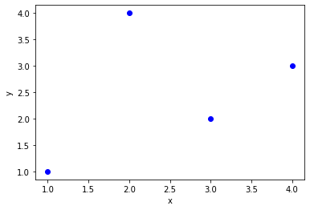
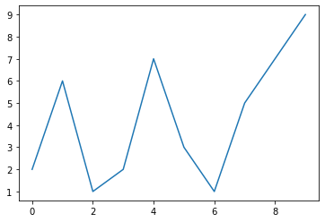
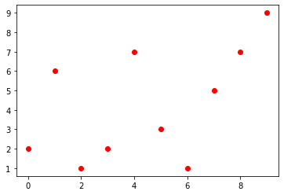
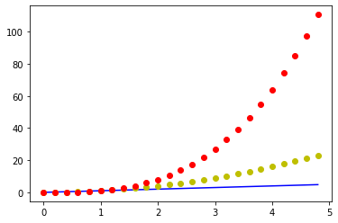
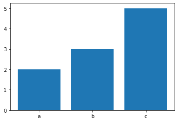
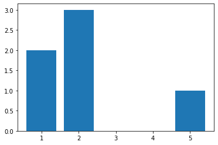
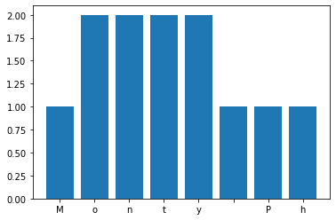

Graphes¶
Le module matplotlib permet d’afficher des graphes. Au début du notebook nous importons ces modules.
import matplotlib.pyplot as plt
import numpy as np
import random
Créons un vecteur de données.
a = [2, 5, 3]
b = [1, 2, 3]
plt.plot(a, b, 'ro-')
plt.ylabel('some nombers');
plt.ylabel('evolution');

fig, ax = plt.subplots() # Create a figure containing a single axes.
ax.plot([1, 2, 3, 4], [1, 4, 2, 3], 'bo')
plt.xlabel('x')
plt.ylabel('y')
pass

Créer des données aléatoires.
y = [random.randint(1, 9) for i in range(10)]
y
[2, 6, 1, 2, 7, 3, 1, 5, 7, 9]
plt.plot(y);

plt.plot(y, 'ro');

# evenly sampled time at 200ms intervals
t = np.arange(0., 5., 0.2)
# red dashes, blue squares and green triangles
plt.plot(t, t, 'r--', t, t**2, 'bs', t, t**3, 'g^')
plt.show()

plt.plot(t, t, 'b-', t, t**2, 'oy', t, t**3, 'or');

Bar plot¶
plt.bar(['a', 'b', 'c'], (2, 3, 5));

numeric x-axis
plt.bar((1, 2, 5), (2, 3, 1));

Sub-plots¶
x = (1, 2, 3)
y = (5, 3, 4)
plt.subplot(131)
plt.bar(x, y)
plt.subplot(132)
plt.plot(y, 'or-')
plt.subplot(133)
plt.plot(x, 'og');
plt.suptitle('1x3 sup-plots')
Text(0.5, 0.98, '1x3 sup-plots')

## Line properties
p = plt.plot(x, y, linewidth=4);
plt.setp(p, animated=True)
[None]

plt.setp(p)
agg_filter: a filter function, which takes a (m, n, 3) float array and a dpi value, and returns a (m, n, 3) array
alpha: float
animated: bool
antialiased or aa: bool
clip_box: `.Bbox`
clip_on: bool
clip_path: [(`~matplotlib.path.Path`, `.Transform`) | `.Patch` | None]
color or c: color
contains: callable
dash_capstyle: {'butt', 'round', 'projecting'}
dash_joinstyle: {'miter', 'round', 'bevel'}
dashes: sequence of floats (on/off ink in points) or (None, None)
drawstyle or ds: {'default', 'steps', 'steps-pre', 'steps-mid', 'steps-post'}, default: 'default'
figure: `.Figure`
fillstyle: {'full', 'left', 'right', 'bottom', 'top', 'none'}
gid: str
in_layout: bool
label: object
linestyle or ls: {'-', '--', '-.', ':', '', (offset, on-off-seq), ...}
linewidth or lw: float
marker: marker style
markeredgecolor or mec: color
markeredgewidth or mew: float
markerfacecolor or mfc: color
markerfacecoloralt or mfcalt: color
markersize or ms: float
markevery: None or int or (int, int) or slice or List[int] or float or (float, float)
path_effects: `.AbstractPathEffect`
picker: float or callable[[Artist, Event], Tuple[bool, dict]]
pickradius: float
rasterized: bool or None
sketch_params: (scale: float, length: float, randomness: float)
snap: bool or None
solid_capstyle: {'butt', 'round', 'projecting'}
solid_joinstyle: {'miter', 'round', 'bevel'}
transform: `matplotlib.transforms.Transform`
url: str
visible: bool
xdata: 1D array
ydata: 1D array
zorder: float
s = 'Monty Python'
d = {}
for c in s:
d[c] = d.get(c, 0) + 1
d
{'M': 1, 'o': 2, 'n': 2, 't': 2, 'y': 2, ' ': 1, 'P': 1, 'h': 1}
plt.bar(d.keys(), d.values());

labels = ['G1', 'G2', 'G3', 'G4', 'G5']
men_means = [20, 35, 30, 35, 27]
women_means = [25, 32, 34, 20, 25]
men_std = [2, 3, 4, 1, 2]
women_std = [3, 5, 2, 3, 3]
width = 0.35 # the width of the bars: can also be len(x) sequence
fig, ax = plt.subplots()
ax.bar(labels, men_means, width, yerr=men_std, label='Men')
ax.bar(labels, women_means, width, yerr=women_std,
bottom=men_means,
label='Women')
ax.set_ylabel('Scores')
ax.set_title('Scores by group and gender')
ax.legend()
plt.show()